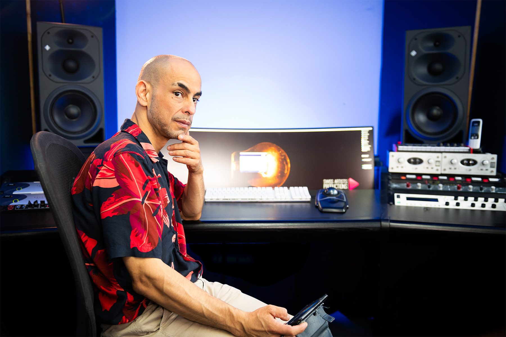
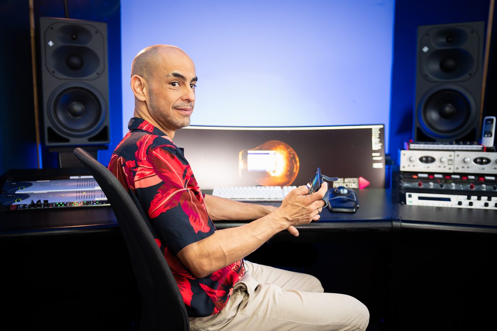

Je pilote vos projets, de l'idée à l'écran.
Chef de projet audiovisuel et digitalResponsable visibilité et marketing
Savoir-faire pour concevoir, coordonner et livrer :
- Conception et chef des opérations pour stations TV et radio et complexes multimédias
- Direction de la communication
- Développement de la visibilité
- Expérience30 ans
- LieuSuisse romande
- LanguesFrançais, anglais
- NationalitéSuisse
Le lien entre la direction, les équipes et le public.
Je cadre les projets, je fédère des équipes internationales et je livre des résultats fiables, dans les délais. Ma double culture, technique et managériale, me permet de parler aussi bien à une direction qu'à une régie, et de transformer un objectif de communication en contenus concrets.
Gestion de projet de A à Z
Cahier des charges, budget, prestataires, planning, mise en service : trois infrastructures audiovisuelles livrées, dont une chaîne radio-TV.
Communication et contenus digitaux
Avec Sowatt Music, j'accompagne les PME dans leur communication : films, vidéos, contenus pour le web et les réseaux.
Une carrière internationale
Londres, Paris, Marrakech, Montreux : des équipes et des artistes du monde entier, en français comme en anglais.

Les jalons.
- 2000 – auj.Sowatt Music SàrlCommunication pour les PME, vidéo, label, production musicale, management artistique, studio de production son et image
- 2026 – présentLoreto1 Trading SAResponsable administratif et visibilité pour cette société immobilière
- 2022 – 2025M Le MediaCréation d'une chaîne radio-TV, de la conception à l'antenne
- 2009 – 2017The Hana Road Music GroupConception d'un complexe de production audio et multimédia. Enregistrements : Van Morrison (avec Bob Rock), Larry Graham
- 2007 – 2020Dorier · Winkler · Illumination · Media One Group · Rouge TVSon et vidéo pour l'événementiel et la TV
- 1999 – 2007Mutt Lange · Sully SoundStudio et personal management : Céline Dion, Britney Spears, Shania Twain
- 1994 – 1999Londres · Paris · MarrakechStudios, post-production TV, centre de production